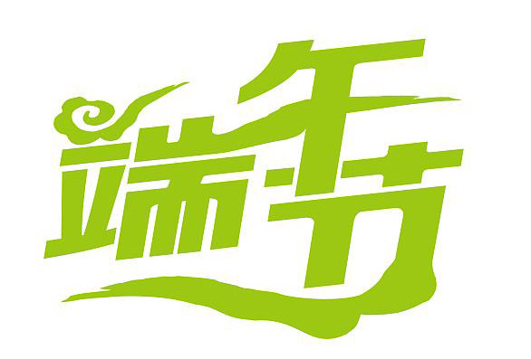
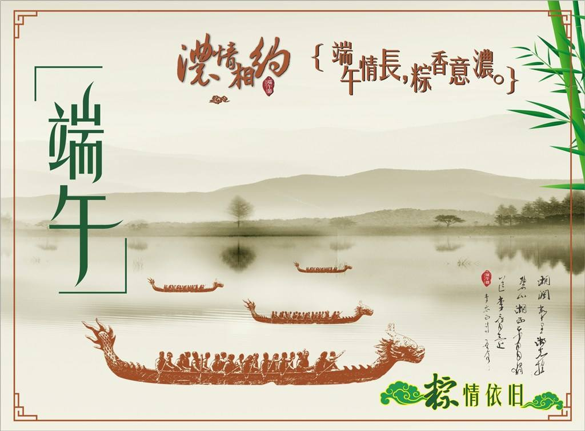
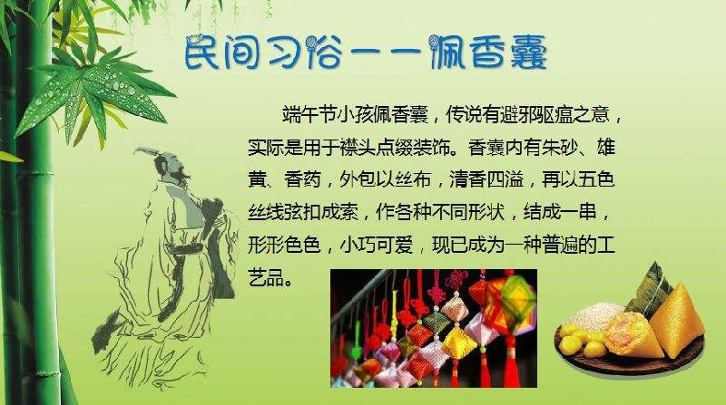
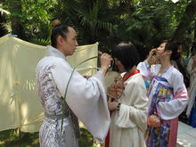
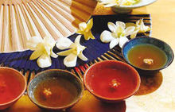
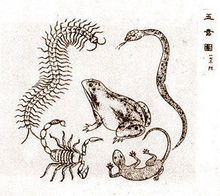

首页
习俗
传统
由来
诗歌

端午节，为每年农历五月初五。据《荆楚岁时记》记载，因仲夏登高，顺阳在上，五月是仲夏，它的第一个午日正是登高顺阳好天气之日，故五月初五亦称为“端阳节”。此外端午节还称“午日节、五月节、龙舟节、浴兰节、诗人节”等。


端午节时以雄黄涂抹小儿额头的习俗，云可驱避毒虫。典型的方法是用雄黄酒在小儿额头画“王”字，一借雄黄以驱毒，二借猛虎（“王”似虎的额纹，又虎为兽中之王，因以代虎）以镇邪。

饮蒲酒、雄黄、朱砂酒，以酒洒喷。古语曾说：“饮了雄黄酒，病魔都远走。雄黄酒有杀菌驱虫解五毒的功效，中医还用来治皮肤病。
端午节时厌胜佩饰。亦称续命缕、续命丝、延年缕、长寿线，百索、辟兵绍、五彩缕等，名称不一，形制、功用大体相同。

端午在古人心目中是毒日、恶日，在民间信仰中这个思想一直传了下来，所以才有种种求平安、禳解灾异的习俗。